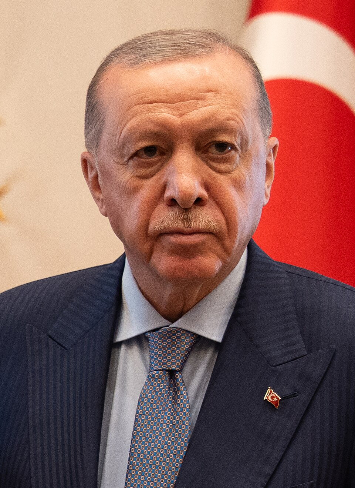
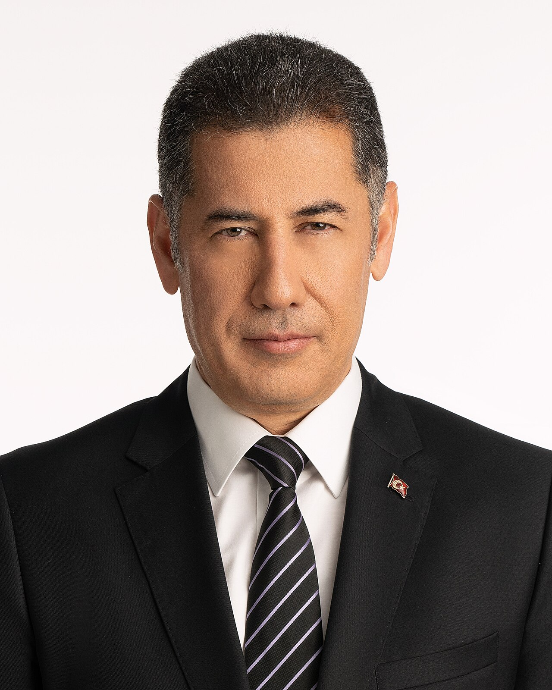
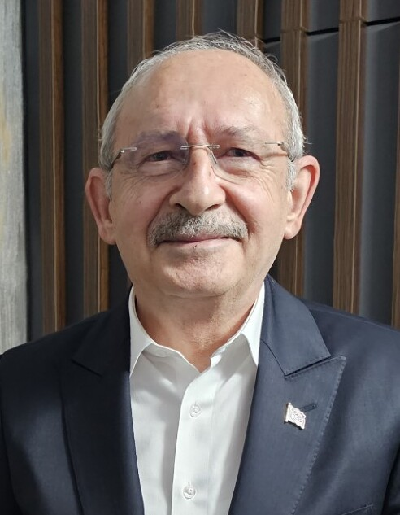

her aday için sadece hedef konuşmacı blokları analiz edildi. moderatör, gazeteci ve
soru metinleri dışarıda bırakıldı; oranlar farklı metin hacimlerini karşılaştırmak için
1.000 temiz token başına hesaplandı.
act i
kelimeler, kimlikler, kümeler
hangi kelimeler adaylara yapışıyor?
“biz” ve “ben” ne kadar merkezde?
bir çapa kelimeden sonra hangi ifadeler geliyor?
bulgular
bu veri ne söylüyor?

erdoğan: kolektif ve karşıtlık kuran dil
erdoğan’da “biz” oranı yüksek, “terör” ve “bay kemal / bay bay” gibi karşıtlık kuran ifadeler öne çıkıyor. bu dil, seçmeni ortak bir “biz” içinde toplarken rakibi isimlendiren ve çatışma hattı kuran bir retoriğe yaslanıyor.

oğan: milliyetçi ve aday-merkezli dil
oğan’da “türk” açık ara en ayırt edici kimlik terimi. aynı zamanda “ben” oranı en yüksek aday; “sinan oğan”, “türk milliyetçisi”, “ata ittifakı” gibi ifadeler söylemi hem kişisel pozisyona hem de milliyetçi kimliğe bağlıyor.

kılıçdaroğlu: kurumlar, parti ve açıklama dili
kılıçdaroğlu’nda “parti”, “genel başkan”, “cumhuriyet halk / halk partisi” ve “ifade edeyim” gibi kalıplar daha görünür. “biz” güçlü kalsa da dil, hareket ve kurum üzerinden açıklama yapmaya daha yakın duruyor.
not: bu sonuçlar mevcut transcript örneklerine dayanır; corpus büyüdükçe oranlar ve öne çıkan kümeler değişebilir.
corpus dengesi bulguları sınırlar.
oğan ve kılıçdaroğlu için hedef konuşma bloğu sayısı erdoğan’dan daha yüksek. bu yüzden yorumlarda ham sayılardan çok 1.000 token başına oranlara ve tekrarlayan ifade kalıplarına bakmak gerekir.
sıklık
kimin sözlüğünde hangi kelime öne çıkıyor?
aday seçerek en sık geçen kelimelerin dağılımını inceleyin. işlev kelimeleri ve
sayı tokenları çıkarıldı; zamirler özellikle korunuyor.
en sık kelimelerilk 24 kelime
sıklıklar üç farklı odak gösteriyor.
erdoğan’ın listesinde “biz”, “bizim”, “türkiye”, “terör” ve “bay” birlik ve karşıtlık eksenini kuruyor. oğan’da “ben”, “türk”, “sayın”, “türkiye” ve “ittifakı” adayın kendisini milliyetçi pazarlık alanına yerleştiriyor. kılıçdaroğlu’nda “biz”, “parti”, “lazım”, “zaman” ve “genel” daha açıklayıcı ve örgütsel bir tona işaret ediyor.
kimlik dili
“biz”, “ben”, “türkiye” ve diğer işaretler.
bu bölüm seçili terimlerde adayların 1.000 token başına kullanımını gösterir. mutlak
sayılar yerine oranlara bakmak küçük ve büyük corpus farklarını dengeler.
zamirler ideolojik pozisyonu değil, hitap biçimini gösteriyor.
“biz” erdoğan ve kılıçdaroğlu’nda en güçlü kolektif işaretlerden biri. oğan ise “ben” ve “türk” oranlarında ayrışıyor; bu, söylemin hem kişisel konuma hem de milliyetçi kimliğe daha fazla yaslandığını düşündürüyor. “terör” erdoğan ve kılıçdaroğlu’nda görünürken oğan’da daha düşük kalıyor.
kelime kümeleri
bir kelimenin hemen ardından ne geliyor?
“biz x”, “ben x”, “türkiye x”, “millet x” gibi yakın takip örüntüleri,
söylemin özne kurma biçimini daha görünür hale getirir.
küme gezginiaday rengine göre
kümeler tek kelimeden daha açıklayıcı.
“biz yaptık / biz varız” erdoğan’da icraat ve varlık iddiası kuruyor. oğan’ın “ben türk” ve “türk milliyetçisi” çevresi kimlik ilanı gibi çalışıyor. kılıçdaroğlu’nda “ben adayım”, “biz üretmiyoruz” ve “biz yönetiyoruz” türü kümeler eleştiri ile yönetme iddiasını yan yana getiriyor.
ifadeler
en sık iki ve üçlü ifadeler
* “bay bay” ifadesi “bye-bye” ses oyunuyla kullanılıyor.
kalıp ifadeler siyasal rolü görünür kılıyor.
erdoğan’ın kalıplarında rakip isimlendirme ve sloganlaşma belirgin. oğan’ın kalıpları aday adları, ittifaklar ve milliyetçi kimlik etrafında yoğunlaşıyor. kılıçdaroğlu’nun kalıpları parti kurumu, açıklama dili ve politika kapasitesi etrafında toplanıyor.
sonuç
aynı seçim, üç farklı özne kurma biçimi.
bu örneklemde erdoğan söylemi ortak “biz” ve karşıtlık çizgisiyle, oğan söylemi milliyetçi kimlik ve kişisel adaylık konumuyla, kılıçdaroğlu söylemi ise kurum, parti ve açıklama diliyle öne çıkıyor. bu farklar tek başına ideoloji kanıtı değil; ancak politik hizalanmanın konuşma içinde hangi özne, hangi rakip ve hangi kolektif etrafında kurulduğunu gösteren izler sunuyor.
ham veri
transcript dosyaları
analizde kullanılan ham transcript dosyaları aşağıda. site kopyaları doğrudan açılabilir; yöntem kısmında anlatıldığı gibi analiz yalnızca hedef aday bloklarını kullanır.
erdoğan:foreign, commonwealth & development office, originally posted on flickr and copied to wikimedia commons using flickypedia by a1cafel on 2 july 2025.source
oğan:dr. sinan oğan 2023, 23 april 2023, own work by iletisimsinanogan. wikimedia vrt permission ticket #2023042810004591.vrt ticket
kılıçdaroğlu:kemal kılıçdaroğlu in 2024, 28 february 2024, voice of america.source